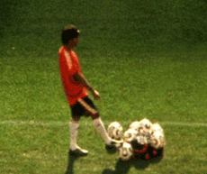

|
SUBSTITUTE
Fred Poulet & Vikash Dhorasoo | F 2006 | 71 min.
Format: 35mm
Material: Super-8
Original language: French
Script: Fred Poulet, Vikash Dhorasoo
Camera: Fred Poulet, Vikash Dhorasoo
Editing: Fred Poulet, Vikash Dhorasoo
Sound: Dominique Dalmasso
With Vikash Dhorasoo
Production: Local Films, Paris; Label Blue, Amiens
Distribution: Freunde der Deutschen Kinemathek, Berlin
The football World Cup 2006 from the perspective of the French national player Vikash Dhorasoo and the writer and musician Fred Poulet. Both shoot footage with a super-8 camera: the one his everyday experiences as an increasingly frustrated substitute player for the Équipe tricolore; the other everything that happens during his travels throughout Germany and inside the stadium at all the French games. What begins as a World Cup adventure, full of hope, turns into the diary of a bitter disappointment. Sixteen minutes on the field are too little to give him a sense of belonging. Fortunately, there’s the camera: if he can’t play football, at least he can film! (Birgit Kohler)
“The three-minute reels, the camera noise and its overall dimensions forced Vikash to fully concentrate on shooting, making a perspective like that of a surveillance camera impossible.” (Fred Poulet)
Vikash Dhorasoo, born 1973 in Harfleur, France. Since 1993 he has played for professional soccer teams in Le Havre, Lyon, Bordeaux, Milan and Paris. He made his debut on the French squad in 1999 and had eighteen national team appearances.
Fred Poulet, born 1961 in Dijon. He grew up in Mulhouse and moved to Paris in the late 1980s, where he worked as a set decorator and also wrote songs. In 1992, he was discovered by Pierre Barough, who offered him a contract with the music label Saravah, for whom he recorded three albums. Since 1996/97, he has made several music videos. Substitute is his first feature-length film.
Films (selection): Walking Indurain 1996 | Au dépanneur 1997 | La scie électrique 2001 | Milan Athletic Cinema. Alain Delon. Electric Fish 2005 | Substitute 2006
back
|